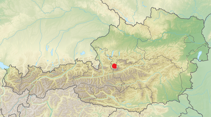

Géographie
Géographie de Hallstatt
La commune se trouve dans le district de Gmunden, dans le sud de la Haute-Autriche, près du tripoint avec les Lander de Salzbourg et de Styrie
proche du sommet du Hoher Dachstein (2 995 m). Le centre de la municipalité se situe sur la rive ouest abrupte du Hallstättersee.
Le profil type qui définit la base géologique du Rhétien, le conodonte Misikella posthernsteini se trouve dans le profil type de Steinberkogel au-dessus de Hallstatt
Communes limitrophes
Localisation de Hallstatt
